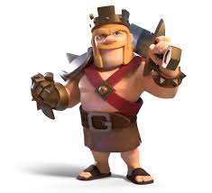

Король варваров — первый герой в Clash of Clans, доступный с 7-го уровня Ратуши. Это «танк» с высоким запасом здоровья, предназначенный для поглощения урона и разрушения внешних зданий, а его способность «Железный кулак» призывает варваров и восстанавливает здоровье. Король незаменим для защиты базы и создания пути для основных войск.